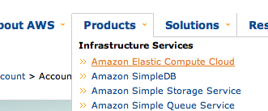
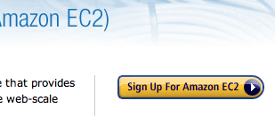
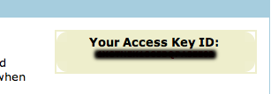
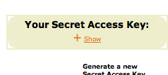

Setting up EC2
Note: PoolParty works with ANY ubuntu AMI (support for other OSes is already in progress)
Sign up
- Navigate to Amazon's aws page and click on the Getting started link. If you already have an aws account, log in and skip the next step.
- Sign up and validate your account
- Once you've signed up or signed in, hover over the product's menu and click on Elastic Computing Cloud. 
- Then, click on the Sign up for Amazon EC2 button to sign up for the ec2 service 
-
Now, once you have access to ec2, get your access identifiers by hovering over Your Account in the menu and clicking on Access Identifiers

- Scroll down the page and find the box titled "Access Key ID and Secret Access Key," In the box, you should see a box titled "Your Access Key ID." Make note of this string. 
- Scroll down a little further and find the box titled "Your Secret Access Key." This box is hidden for security reasons, so you'll have to click on the show link. Make note of this string as well. 
Setup
PoolParty expects a number of access identifiers to be in one of several places.
clouds.rb
You can explicitely set them in your clouds.rb like so:
cloud :app do
access_key "AAAAAAAAAABBBBBB"
secret_access_key "NRLSKDM@$@$/4@$%%NNNSN"
# ...
end
environment variables
Poolparty commands will look for the following AWS environment variables
- AWS_ACCESS_KEY
- AWS_SECRET_ACCESS_KEY
- EC2_PRIVATE_KEY
- EC2_CERT
for your AWS access key, secret key, private key & cert, respectively.
Stick this in your ~/.bashrc or ~/.profile. (Alternatively, create a script in ~/.ec2/keys_and_secrets.sh and then source $HOME/.ec2/keys_and_secrets.sh in your ~/.profile)
#!/bin/sh
export AWS_ACCESS_KEY="AAAAAAAAAABBBBBB"
export AWS_SECRET_ACCESS_KEY="NRLSKDM@$@$/4@$%%NNNSN"
export EC2_PRIVATE_KEY="/path/to/pk-XXX.pem"
export EC2_CERT="/path/to/cert-XXX.pem"
Be sure to open a new terminal before you continue so that your changes are re-loaded (or reload your profile from the command-line with
source ~/.profile
).
Keypair
If you haven't done so already, generate the keypair
todo - put in cmds for keypair generation
Ports

Finally, make sure the following ports are open in your EC2 security group:
- 22
- 8642
Old ports not required for release 1.1 and after
- 4369 (erlang daemon)
- 8140 (puppet)
- 7050 (cloud management)
If these ports aren't open, your cloud will fail.
ec2-authorize -p 22 default
ec2-authorize -p 8642 default
Sometimes it's nice to ping your machine, but ping doesn't need to be open, so this step is optional:
ec2-authorize -P icmp -t -1:-1 default
clouds.rb file location
If you are going to point to one clouds.rb file more often than any other, you can add it as an environment variable as well, like so
export POOL_SPEC=/home/auser/Sites/pp/clouds.rb
This will save a lot of headache if you export this in the file. PoolParty expects to be able to find the clouds.rb in one of several locations.
- the current directory
- the file pointed to by the POOL_SPEC environment variable
- ~/.poolparty/clouds.rb
- /etc/poolparty/clouds.rb
Note, that if you are in the same directory as your clouds.rb file, then PoolParty will assume you are working with that file.